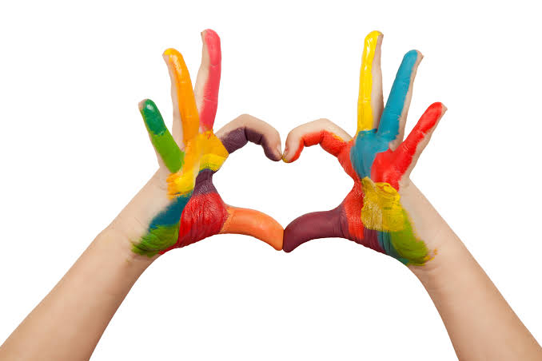

Mis derechos, mi voz y mi futuro
Todas las personas tenemos derechos que deben ser respetados sin importar nuestra edad, género, origen o condición social. Durante la adolescencia, conocer nuestros derechos nos permite desarrollar nuestra personalidad y participar de manera activa en la sociedad.

Uno de nuestros derechos fundamentales es recibir una educación de calidad, que nos permita adquirir conocimientos y desarrollar nuestras habilidades. También tenemos derecho a recibir atención médica y orientación adecuada para proteger nuestra salud.
El derecho a expresar nuestras opiniones nos permite compartir ideas y participar en decisiones que afectan nuestra vida. Sin embargo, debemos hacerlo con respeto, escuchando también los pensamientos y sentimientos de los demás.
Asimismo, tenemos derecho a vivir libres de violencia, discriminación y cualquier forma de abuso. Nadie debe vulnerar nuestra dignidad ni obligarnos a realizar acciones que pongan en riesgo nuestra integridad física o emocional.
Conocer nuestros derechos también implica asumir responsabilidades. Respetar a otras personas, cumplir nuestros compromisos y actuar con solidaridad contribuye a construir una sociedad más justa.